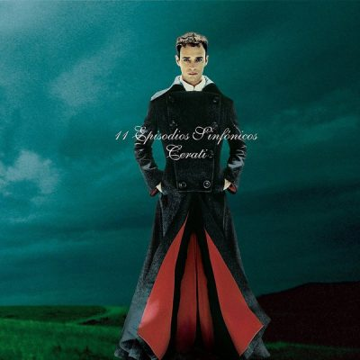

<!DOCTYPE html>
<html><!DOCTYPE html>
  <html>
    <head>
      <title>Spinetta</title>
      <meta charset="utf-8">
      <meta http-equiv="X-UA-Compatible" content="IE=edge">
      <meta name="viewport" content="width=device-width, maximum-scale=1.0, user-scalable=no">
      <link rel="stylesheet" href="https://fonts.googleapis.com/css?family=Lato:400,400i,700,700i|Oswald:400,500,600,700&amp;display=swap">
      <link rel="stylesheet" href="../css/spinetta.css">
      <script src="https://kit.fontawesome.com/552ebddad2.js"></script>
    </head>
    <body></body>
  </html>
  <body>
    <header class="header--principal">
      <div class="logo logo--header"></div>
      <nav class="nav--header">
        <ul>
          <li><a href="pagina-principal.html">home</a></li>
          <li><a href="articulo.html">Notas</a></li>
          <li><a href="perfil.html">Perfil</a></li>
        </ul>
      </nav><a class="header__busqueda" href="resultados-busqueda.html"><i class="fas fa-search"></i><span>Search</span></a>
    </header>
    <section class="intro">
      <div class="intro__imagen"></div>
      <div class="intro__contenido"><span class="intro__categoria">Noticias</span>
        <h1 class="intro__titulo">Luis</h1>
      </div>
      <div class="intro__autor"><span class="intro__autor-titulo">Autor</span><span class="intro__autor-nombre">Luis Alberto Spinetta</span></div>
    </section>
    <article class="articulo--principal">
      <p class="articulo--principal__intro">Con una foto inédita de Luis Alberto Spinetta, anuncian el lanzamiento del documental sobre su vida</p>
      <p>Los fanáticos de Luis Alberto Spinetta tendrán la posibilidad de ver material inédito de su ídolo a partir del segundo semestre de 2019, cuando se estrene el docu-reality del músico que formará parte de la segunda temporada de Bios. Vidas que marcaron la tuya, que se verá por la pantalla de National Geographic.</p>
      <p>Con el apoyo de su familia delante y detrás de cámara y la producción de Underground, para la realización del episodio dedicado a El Flaco se tuvo acceso a más de cien horas de grabaciones que nunca habían salido a la luz y testimonios de quienes compartieron el detrás de escena con el creador de Muchacha ojos de papel.</p>
      <h3>Noticias, fecha de lanzamiento y plataformas del documental de Luis Alberto Spinetta</h3>
      <p>En la primera temporada, disponible en Nat Geo App, hubo dos episodios dedicados a Charly García y Gustavo Cerati, entre otros, que conmovieron a los amantes de la música argentina de toda la región y posicionaron al ciclo como trending tropic global durante su emisión. Y se espera que el capítulo dedicado Spinetta tenga una repercusión similar o aún mayor.</p>
      <p>Nacido el 23 de enero de 1950, en Buenos Aires, El Flaco se destacó como cantante, guitarrista, escritor y compositor.  Falleció el 8 de febrero de 2012. Y, en 2014, se estableció por ley que el día de su nacimiento fuera instituido como El Día Nacional del Músico en Argentina.</p>
      <h2>No te Pierdas...</h2>
    </article>
    <section class="contenedor--cajas">
        <div class="caja">
          <div class="caja__imagen"></div>
          <div class="caja__contenido"><span class="caja__categoria">Cerati</span>
            <h3>Tres discos favoritos de Luis Alberto Spinetta</h3>
            <p>Para el líder de Soda Stereo, fanático confeso de Artaud y fundamentalmente de su creatividad, “El Flaco” fue una suerte de brújula y padre musical.</p><a>Leer Mas		</a>
          </div>
        </div>
        <div class="caja">
          <div class="caja__imagen"></div>
          <div class="caja__contenido"><span class="caja__categoria">Fito</span>
            <h3>El cálido recuerdo de Fito Páez sobre Spinetta</h3>
            <p>En una conversación distendida con Catarina Spinetta el rosarino recordó con emoción el momento en el que se encontró con el Flaco por primera vez en la calle.</p><a>Leer Mas		</a>
          </div>
        </div>
        <div class="caja">
          <div class="caja__imagen"></div>
          <div class="caja__contenido"><span class="caja__categoria">Lebon</span>
            <h3>La fuerte confesión de David Lebón sobre Luis Alberto Spinetta</h3>
            <p>En una profunda entrevista a Clarín, donde habló de Serú Girán, el paso del tiempo, su amistad con Luis Alberto Spinetta y con Charly</p><a>Leer Mas		</a>
          </div>
        </div>
    </section>
    <footer class="footer--principal">
      <div class="logo logo--footer"></div>
      <nav class="nav--footer">
        <ul>
          <li><a href="pagina-principal.html">home</a></li>
          <li><a href="articulo.html">Notas</a></li>
          <li><a href="perfil.html">Perfil</a></li>
        </ul>
      </nav>
      <div class="nav--social">
        <ul>
          <li>Siguenos</li>
          <li><a href="#"><i class="fab fa-instagram"></i></a></li>
          <li><a href="#"><i class="fab fa-pinterest"></i></a></li>
          <li><a href="#"><i class="fab fa-twitter"></i></a></li>
          <li><a href="#"><i class="fab fa-facebook-f"></i></a></li>
        </ul>
      </div>
    </footer>
  </body>
</html>